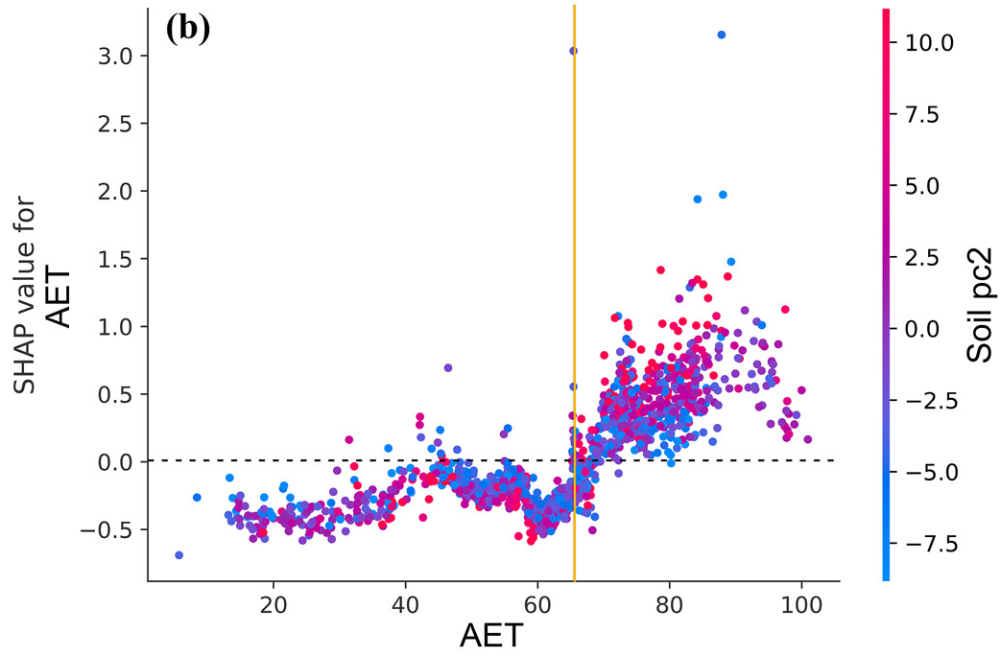

Explainable AI (XAI) & Physical Interpretability¶
Publication Reference: Modaresi Rad, A., et al. (2024). Enhancing River Channel Dimension and Bathymetry Estimates Across Continental Scale Using Machine Learning and Functional Hydraulic Geometry. Journal of Geophysical Research: Machine Learning and Computation, 1(3), e2024JH000173.
The Role of Explainable AI in River Geomorphology¶
In continental-scale hydrologic and hydrodynamic modeling, high predictive accuracy is necessary but insufficient on its own. To be trusted in regulatory flood risk mapping (FEMA) and operational flood forecasting (NOAA-OWP National Water Model), machine learning models must demonstrate that their predictions conform to established physical laws of open-channel hydraulics and fluvial geomorphology.
We employ SHAP (SHapley Additive exPlanations) a cooperative game-theoretic framework developed by Lundberg & Lee (2017) to compute exact, additive feature attributions for channel depth (\(Y\)) and Functional Hydraulic Geometry (FHG) parameters (\(f\) and \(c\)).
where \(\phi_0\) is the base expected model prediction across the continental dataset, and \(\phi_j(\mathbf{x})\) is the Shapley value quantifying the positive or negative contribution of predictor \(j\) for reach \(\mathbf{x}\).
Global Feature Importance & Elbow Optimization¶
The global importance of each hydro-environmental predictor was evaluated across all CONUS training reaches by calculating the mean absolute Shapley value (\(|\phi_j|\)):
 Figure 1: (a) Global TreeSHAP feature importance ranking and summary beeswarm plot for the v1.0 Depth model. Points represent individual stream reaches, with color indicating raw feature value (red = high, blue = low) and x-axis indicating impact on predicted depth. (b) Recursive feature elimination using the Elbow Method tracking model \(R^2\), demonstrating optimal parsimony at 15 features (Modaresi Rad et al., 2024).
Figure 1: (a) Global TreeSHAP feature importance ranking and summary beeswarm plot for the v1.0 Depth model. Points represent individual stream reaches, with color indicating raw feature value (red = high, blue = low) and x-axis indicating impact on predicted depth. (b) Recursive feature elimination using the Elbow Method tracking model \(R^2\), demonstrating optimal parsimony at 15 features (Modaresi Rad et al., 2024).
flowchart TD
subgraph DRIVERS ["Dominant Channel Depth Predictors (Top 15 Subset)"]
direction TB
QBF["<b>1. Bankfull Discharge (Q<sub>bf</sub>)</b><br/>Primary volumetric energy scaling depth"]
ELEV["<b>2. Elevation & Reach Slope</b><br/>Gravitational energy gradient and valley setting"]
BFI["<b>3. Base Flow Index (BFI)</b><br/>Groundwater contribution & permanent thalweg maintenance"]
PC0["<b>4. NWM Flood pc0 & Flood pc1</b><br/>Hydrograph peakedness & flood frequency moments"]
AET["<b>5. Actual Evapotranspiration (AET)</b><br/>Hydroclimatic moisture & vegetated runoff regulation"]
SOIL["<b>6. Soil PCs (pc0, pc1, pc2) & Roughness</b><br/>Geotechnical bank cohesion & boundary resistance"]
end
class DRIVERS highlight-blue;
class QBF highlight-blue;
class ELEV highlight-blue;
class BFI highlight-teal;
class PC0 highlight-teal;
class AET highlight-orange;
class SOIL highlight-orange;Top 15 Predictors Ranked by SHAP Value¶
| Rank | Feature Name | Category | SHAP Directionality & Hydraulic Mechanism |
|---|---|---|---|
| 1 | Bankfull Discharge | Hydrology | Dominant positive driver. High \(Q_{\text{bf}}\) (red dots) provides the primary volumetric flow to maintain deeper channel profiles (\(\text{SHAP} > +5.0\)). |
| 2 | Elevation | Terrain | High elevation (red dots) exhibits negative SHAP values, reflecting shallow, steep headwater channels relative to lowland mainstems. |
| 3 | Slope | Geomorphometry | High bed slope produces negative SHAP values. As flow velocity (\(m\)) increases on steep gradients, stage rises more slowly per unit flow (\(f \downarrow\)). |
| 4 | Base Flow Index (BFI) | Hydrogeology | High BFI (red dots) provides sustained perennial baseflow, scouring and maintaining a deeper, well-defined permanent channel thalweg. |
| 5 | NWM Flood pc0 | Flow Dynamics | First principal component of NWM flood recurrence moments; governs peak channel-forming hydraulic capacity. |
| 6 | Actual Evapotranspiration (AET) | Hydroclimate | Reflects catchment water balance and vegetative maturity; high AET correlates with cohesive vegetated banks that promote vertical deepening. |
| 7 | Elevation Difference | Terrain | Reach-level topographic drop; steep relief concentrates energy into velocity rather than depth. |
| 8 | Soil pc1 | Soil Mechanics | First principal component of POLARIS soil properties; captures soil texture, clay fraction, and hydraulic conductivity. |
| 9 | NWM Flood pc1 | Flow Dynamics | Second principal component of NWM flood quantiles; modulates moderate flood event magnitude. |
| 10 | Roughness | Hydrodynamics | Channel boundary resistance; retards velocity and raises equilibrium water stage. |
| 11 | Soil pc2 | Soil Mechanics | Second principal component of soil profile characteristics, moderating soil moisture retention and bank stability. |
| 12 | Arbolatesu | Hydrography | Cumulative upstream network length; scales with cumulative flow accumulation and sediment transport capacity. |
| 13 | PET | Climate | Potential Evapotranspiration; captures atmospheric evaporative demand and aridity gradients. |
| 14 | Lengthkm | Geometry | Reach flowline length; longer reaches typically occur in low-gradient alluvial valleys with deeper cross-sections. |
| 15 | Soil pc0 | Soil Mechanics | Fundamental soil physical characteristics influencing infiltration capacity and runoff routing. |
Elbow Method Feature Space Optimization¶
As illustrated in Figure 1b, recursive feature dropping guided by model skill demonstrates clear elbow dynamics:
- At 116 features, cross-correlation and collinearity limit performance to \(R^2 \approx 58\%\).
- Progressively eliminating non-informative variables concentrates predictive skill into orthogonal physical drivers.
- The performance curve peaks at 15 features (\(R^2 \approx 81\%\)), highlighted by the vertical red dashed line. Reducing features below 15 causes a rapid degradation in predictive skill (\(R^2 < 76\%\)).
SHAP Interaction & Dependency Analysis¶
To evaluate non-linear environmental couplings, SHAP interaction values decouple individual predictor responses from second-order dependencies:

{kind=link}
Actual Evapotranspiration (AET) \(\times\) Soil Properties Interaction¶
flowchart TD
subgraph ARID ["1. Water-Limited / Arid Regimes (AET < 66)"]
A1["Sparse Riparian Cover<br/>Low Catchment Moisture"]
A2["<b>Negative SHAP Contribution (-0.7 to 0.0 m)</b><br/>Wide, Shallow Cross-Sections"]
A1 --> A2
end
subgraph HUMID ["2. Energy-Rich / Humid Regimes (AET > 66)"]
H1["Dense Riparian Root Stabilization<br/>Cohesive Clay-Rich Soils (Soil pc2)"]
H2["<b>Positive SHAP Contribution (+0.5 to +3.0+ m)</b><br/>Deep, Well-Defined Channel Thalwegs"]
H1 --> H2
end
ARID ~~~ HUMID
class ARID highlight-blue;
class HUMID highlight-teal;
class A1 highlight-blue;
class A2 highlight-blue;
class H1 highlight-teal;
class H2 highlight-teal;Physical Mechanisms Revealed:¶
- Threshold at \(\text{AET} \approx 66\):
- In arid and water-limited catchments (\(\text{AET} < 66\)), SHAP values remain negative (\(-0.7\text{ to }0.0\text{ m}\)), indicating that low vegetative density and non-cohesive soils produce wider, shallower channels.
- At \(\text{AET} \approx 66\), the interaction exhibits a sharp upward transition where moisture availability supports dense bank-stabilizing root matrices.
- Amplification by Soil Characteristics (
Soil pc2): - Above \(\text{AET} > 66\), catchments with high
Soil pc2values (pink/red points) exhibit substantial positive depth adjustments (\(\text{SHAP} > +1.0\text{ to }+3.0\text{ m}\)), reflecting deeper, cohesive channels where lateral erosion is constrained and flow energy is directed into vertical incision.
Synthesis with Fluvial Geomorphic Theory¶
The learned relationships within the v1.0 machine learning ensemble closely replicate classical geomorphic balance principles:
flowchart TD
Q_VOL["<b>1. Volumetric Discharge (Q<sub>bf</sub>, BFI)</b><br/>• Dominant positive driver of depth capacity<br/>• Sustains defined in-channel thalweg"]
SLOPE_ELEV["<b>2. Slope & Elevation Dynamics</b><br/>• High slope accelerates velocity (m ↑)<br/>• Reduces depth exponent (f ↓) by continuity"]
SOIL_VEG["<b>3. Soil Cohesion & AET Interaction</b><br/>• High AET + cohesive soils restrict widening<br/>• Flow energy forced into vertical deepening"]
Q_VOL --> DEPTH["<b>Continuous Channel Depth (Y)</b><br/>Y = c · Q<sup>f</sup>"]
SLOPE_ELEV --> DEPTH
SOIL_VEG --> DEPTH
class DEPTH highlight-orange;
class Q_VOL highlight-blue;
class SLOPE_ELEV highlight-teal;
class SOIL_VEG highlight-teal;- Lane's Balance & Energy Dissipation:
- The model captures how steep channels dissipate kinetic energy through velocity rather than stage height, directly conforming to hydraulic geometry continuity (\(b + f + m = 1.0\)).
- Boundary Shear Stress Partitioning:
- Geotechnical soil parameters and hydroclimatic variables determine whether boundary shear stress (\(\tau_0 = \gamma R S\)) is accommodated through lateral bank collapse or vertical bed downcutting.
Section Navigation¶
- Depth v1.0 Overview: Problem statement, FHG continuity formulation, and summary.
- Model Architecture: Candidate ML models, feature engineering, and the 3-tier Stacking Meta-Learner.
- Model Skill & Evaluation: Continental USGS validation, NNSE distributions, max flow diagnostics, and literature benchmarking.